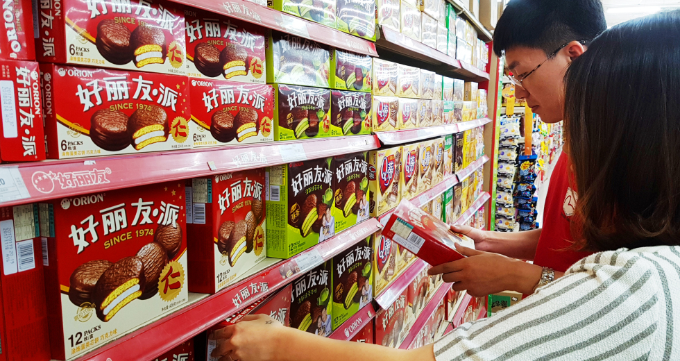
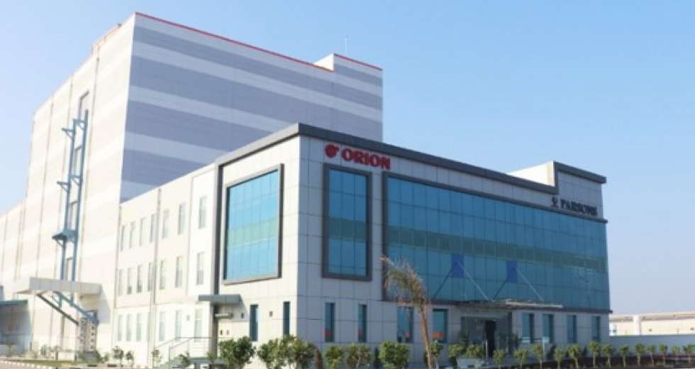

오리온 사업소개
오리온

오리온은 지난 1956년 설립 이후 ‘사람이 먹는 음식만큼은 가장 정직한 마음으로 만들어야 한다’라는 창업 정신 아래 ‘초코파이情’, ‘포카칩’, ‘꼬북칩’ 등 수많은 히트 제품들을 선보이며 국내외 제과 산업을 이끌어왔습니다. 오리온은 식품에 대한 올바른 철학과 전통을 바탕으로 세계를 향해 끊임없이 혁신하며 글로벌 종합식품·헬스케어 기업으로서 도약해 나가고 있습니다. 오리온은 한국 기업들이 내수 시장에만 집중하던 1990년대 중국 진출을 선언한 이래, 베트남과 러시아 진출까지 성공하며 글로벌 기업으로 자리매김했습니다. 중국과 러시아, 베트남, 인도에 총 11개의 생산 공장을 가동하고 철저한 현지화 전략을 통해 전 세계 소비자들로부터 사랑받는 제품들로 지속 성장해가고 있습니다. 오리온은 그룹 경영방침인 윤리경영에 기반한 ESG 활동을 통해 지속가능한 성장을 추구해 나갈 것입니다. 또한, 친환경 인쇄방식 도입, TFT 구성, 설비 개선, 착한 포장 프로젝트 등 주요 정보를 외부에 투명하게 공개하고 친환경 경영에도 적극 앞장서고 있습니다.
오리온 중국 법인
오리온은 1993년 베이징사무소를 개설하고, 1997년 베이징 인근 허베이성 랑팡에 생산공장을 준공하며 중국 공략을 본격화했습니다. 이후 2002년 상하이공장을 완공했고, 2010년에는 광저우 지역에 현지 생산시설을 추가로 세우면서 중국 남부 시장에 대한 공급력을 더욱 확대했습니다. 2013년 국내 식품업계 최초로 중국시장에서 매출 1조 시대를 열고, 2014년에는 셴양공장을 가동해 동북3성 진출에 박차를 가했습니다. 중국 법인은 품질경쟁력을 바탕으로 치밀한 마케팅 활동과 지역별·도시별로 세분화한 현지화 전략을 통해 초코파이(하오리요우파이 好麗友派), 오!감자(야!투도우 呀!土豆)를 비롯해, 예감(슈위엔 薯願), 스윙칩(하오요우취 好友趣), 고래밥(하오뚜어위 好多魚), 큐티파이(Q帝派) 등을 중국의 국민과자 반열에 올려놓았습니다.2020년대에는 뉴트리션바, 양산빵 등 신규 카테고리를 개척하며 새로운 성장 동력을 만들어 가고 있습니다. 임직원 채용에 있어서도 중국 식문화에 대한 이해도가 높은 현지인들을 영업∙마케팅∙생산 부문 리더로 발탁하는 등 철저한 현지화 전략을 통해 시장점유율을 지속적으로 확대해 나갈 방침입니다.
오리온 베트남 법인

1995년 대표 제품인 초코파이를 수출하며 베트남에 첫발을 내딛은 오리온은 2006년 호치민 미푹공장을 설립해 베트남 진출을 본격화하고 2009년 하노이에 제2공장을 가동하며 베트남 내 입지를 강화했습니다. 2006년 현지 생산 체제를 갖춘 후 3년여에 걸쳐 베트남 전역에 딜러를 발굴하고 영업사원이 거래처를 방문할 때마다 진열대를 청소하는 등 한국식 ‘정(情)’영업 전략을 펼치며 현지 시장을 개척했습니다. 베트남 법인은 진출 10년만에 2015년 누적 매출 1조 원을 돌파했습니다. 이후 연평균 10%에 달하는 성장률을 보이며 2020년 12월에는 누적 매출액 2조 원을 달성했고, 2021년에는 연매출 3천억 원을 돌파했습니다. 오리온은 현재 유수의 글로벌 회사들을 제치고 현지 1위 종합식품기업으로 자리매김하고 있습니다. 베트남에서 고성장을 이어갈 수 있었던 배경에는 현지 소비 트렌드 변화에 발맞춘 지속적인 신제품 개발과 새로운 시장 개척 노력이 손꼽힙니다. 특히 성장세가 가파른 양산빵, 쌀과자, 젤리 등 신규 카테고리의 시장 내 리더십을 공고히 해갈 방침입니다. 지리적 이점을 살려 인도네시아, 태국, 미얀마 등 인근 동남아 국가 및 중동, 아프리카 지역 등으로 시장을 넓혀갈 계획입니다.
오리온 러시아 법인

오리온은 1990년대 초 부산을 중심으로 러시아 보따리 상인들의 초코파이 구매붐이 일기 시작한 것을 기회로 삼아 러시아에 초코파이를 직접 수출하기 시작했습니다. 이후 2003년 러시아 법인을 설립하고 2006년 트베리에 공장을 지어 현지 생산체제를 구축하며 22조 규모의 러시아 제과시장 진출을 본격화했습니다. 2008년 노보에 제2공장을 건설하고 초코파이 생산규모를 대폭 확대했습니다. 2021년 현지 생산을 시작한지 15년 만에 누적 매출액 1조 원을 넘어서는 한편, 차별화된 다양한 제품들을 바탕으로 연 매출 1천억 원을 돌파했습니다. 러시아 법인의 고성장 배경에는 현지인 입맛에 맞는 신제품 개발과 비스킷 라인업 확장 등 새로운 시장 개척 노력이 손꼽힙니다. ‘다차’(텃밭이 딸린 시골 별장)에서 농사 지은 베리류를 잼으로 먹는 러시아 현지 문화에 착안해 라즈베리, 체리, 블랙커런트, 망고 등 잼을 활용한 초코파이 신제품을 출시하며 제 2의 전성기를 맞이했습니다. 현재는 오리온 법인 중 가장 많은 10종이 넘는 초코파이를 생산·판매 중입니다. 2022년 6월 완공한 트베리 크립쪼바의 신공장을 중심으로 초코파이의 공급량을 늘리고 파이, 비스킷 등 다양한 신제품을 출시해 시장점유율을 확대하는 한편, 중앙아시아와 유럽 등 신시장도 적극 공략해 갈 계획입니다.
오리온 인도 법인
오리온은 인도 시장의 특성을 고려해 현지 제조업체인 만 벤처스(Mann Ventures)와 손잡고, 2021년 ‘라자스탄’(Rajasthan)주에 생산 공장을 완공했습니다. 인도 법인은 수십년간 축적해온 오리온 그룹의 글로벌 사업 노하우를 바탕으로 초코파이, 초코칩 쿠키, 카스타드, 쌀과자 등 경쟁력 높은 제품을 선보이며, 17조 원 규모의 인도 제과 시장을 본격적으로 공략해 나가고 있습니다. 대도시 내 대형마트와 편의점 등을 중심으로 판매망을 구축하고, 아마존을 비롯한 주요 이커머스 채널을 공략하는 등 공격적인 영업전략을 펼쳐 오리온의 브랜드를 현지 시장에 조기 정착시킬 방침입니다. 향후에는 인도 시장에 적합한 신규 제품군을 지속적으로 개발해 선보이는 등 성장 기반을 공고히 구축해 나갈 계획입니다.
오리온농협
오리온은 더 건강하고 맛있는 식품을 소비자가 간편하게 즐길 수 있도록 프리미엄 간편대용식 사업에 착수하고 2016년 9월 농협과 합작법인 ‘㈜ 오리온농협’을 설립했습니다. 오리온의 간편대용식 사업은 농협이 국산 농산물을 공급하고 오리온농협에서 제품을 생산해 오리온이 판매하는 구조입니다. 이를 위해 경상남도 밀양시 부북면 제대 농공단지에 9,900㎡(3,000평) 규모의 공장을 건설하고 2018년 프리미엄 간편대용식 브랜드 ‘마켓오 네이처’를 론칭했습니다. 주요 제품으로는 ‘과일’, ‘단호박고구마’, ‘검은콩’ 등 자연원물을 강조한 라인업부터 단백질 함량을 높인 ‘단백질’, 유산균과 칼슘을 볼 형태로 더한 ‘카카오’, ‘딸기’ 등 건강 콘셉트 제품, 그리고 ‘펀(Fun)’ 콘셉트로 스테디셀러 과자와 콜라보한 ‘고래밥’, ‘다이제’ 등이 있습니다. 특히 2020년 출시한 오!그래놀라 POP은 ‘초코아몬드’, ‘크랜베리아몬드’, ‘현미아몬드’ 등이 가볍고 바삭한 식감과 가성비로 대중적인 인기를 얻고 있습니다. 오리온은 지속적인 연구, 개발을 통해 다양한 신제품을 출시함으로써 국내 그래놀라 시장 확대를 선도해갈 방침입니다. 또한 중국, 베트남, 러시아 등 글로벌 영업망을 활용, 향후 해외시장을 적극적으로 공략해 우리 농산물 소비 및 수출 확대에도 기여할 계획입니다.
오리온재단
오리온재단은 오리온 창업주 서남(瑞南) 이양구 회장의 사재 출연을 통해 1987년 강원도 삼척에서 ‘서남장학재단’으로 설립되었으며, 1989년 서울로 소재지를 이전했습니다. 2016년 지금의 ‘오리온재단’으로 명칭을 변경하고 아동/청소년/학교, 소외계층, 학술연구 지원사업 등을 주요 영역으로 사회공헌 활동을 꾸준히 펼치고 있습니다. (이사장 : 이승준, 주소 : 서울시 용산구 백범로 90다길 13 (주)오리온 별관 2층, 전화 02-701-8920)